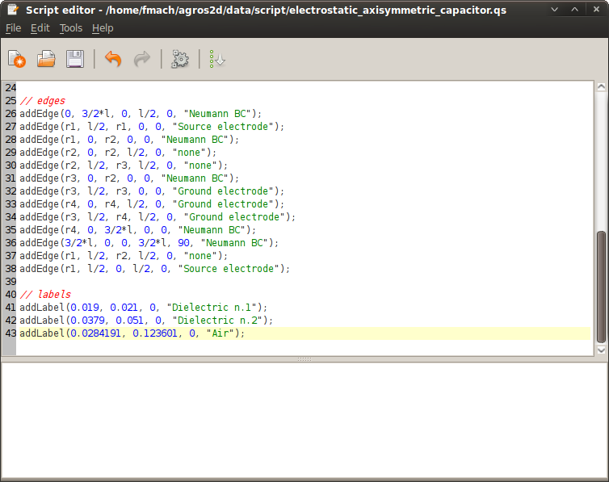

This example demonstrates the basics of scripting in Agros2D. The resulting script can be found if the file /data/scripts/electrostatic_axisymmetric_capacitor.qs.
A special type of a capacitor is a cylindrical capacitor. Cylindrical capacitor has electrodes in the form of the concentric cylinders.
For more information about capacitors visit the webpage http://en.wikipedia.org/wiki/Capacitor.
Select "Script editor" in the "Tools" menu and create new solution by command newDocument in form.
newDocument("Electrostatic axisymmetric capacitor", "axisymmetric", "electrostatic", 1, 2, 0, "hp-adaptivity", 10, 1);
In the script it is usefull to use local variables.
r1 = 0.01; r2 = 0.03; r3 = 0.05; r4 = 0.06; l = 0.16; eps1 = 10; eps2 = 3; U = 10; dr = 0.01;
At first we define boundary conditions. They can be assigned to individual edges in the geometry. Adding boundary conditions is carried out with the command addBoundary.
addBoundary("Source electrode", "potential", U);
addBoundary("Ground electrode", "potential", 0);
addBoundary("Neumann BC", "surface_charge_density", 0);
Next we define materials and then we assign them to individual areas (labels) in the geometry. Adding material is carried out with the command addMaterial.
addMaterial("Air", 0, 1);
addMaterial("Dielectric n.1", 0, eps1);
addMaterial("Dielectric n.2", 0, eps2);
Use edges to create the desired geometry. Adding edges is carried out with the command addEdge.
addEdge(0, 3/2*l, 0, l/2, 0, "Neumann BC"); addEdge(r1, l/2, r1, 0, 0, "Source electrode"); addEdge(r1, 0, r2, 0, 0, "Neumann BC"); addEdge(r2, 0, r2, l/2, 0, "none"); addEdge(r2, l/2, r3, l/2, 0, "none"); addEdge(r3, 0, r2, 0, 0, "Neumann BC"); addEdge(r3, l/2, r3, 0, 0, "Ground electrode"); addEdge(r4, 0, r4, l/2, 0, "Ground electrode"); addEdge(r3, l/2, r4, l/2, 0, "Ground electrode"); addEdge(r4, 0, 3/2*l, 0, 0, "Neumann BC"); addEdge(3/2*l, 0, 0, 3/2*l, 90, "Neumann BC"); addEdge(r1, l/2, r2, l/2, 0, "none"); addEdge(r1, l/2, 0, l/2, 0, "Source electrode");
Use labels to define block labels. Adding bloct labels is carried out with the command addLabel.
addLabel(0.019, 0.021, 0, "Dielectric n.1"); addLabel(0.0379, 0.051, 0, "Dielectric n.2"); addLabel(0.0284191, 0.123601, 0, "Air");
In this example, we will investigate dependence the capacity on the distance of electrodes. For this calculation we will use "do - while" cycle. Type the following code.
print("C = f(r) (F):");
i = 0;
do
{
if (i > 0)
{
selectEdge(6, 7, 8);
moveSelection(dr, 0);
}
solve();
integral = volumeIntegral();
print((2*2*integral.We)/(U^2));
i++;
} while (i<5);
To run the script select "Run" in the menu "Tools", or or by pressing <Ctrl>+R.
After finishing of the script you will get dependence the capacity on the distance of electrodes.